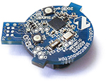
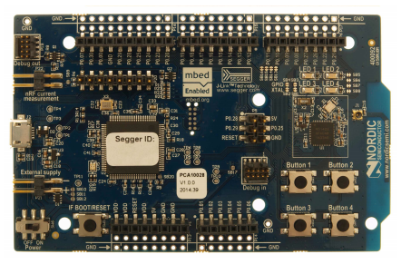
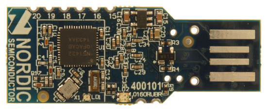
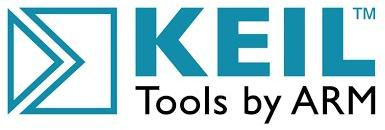

Среда разработки приложений IAR
Среда разработки приложений GCC
Для изучения возможностей микросхемы nRF51822 и для удобства разработки собственных приложений компания Nordic Semiconductor предлагает ряд специальных отладочных плат. Основой каждой платы является микросхема nRF51822. Для более простого доступа к выводам микросхемы на платах предусмотрен набор внешних выводов, к которым можно подключиться с помощью штырькового разъема либо с помощью пайки, либо просто методом касания соответствующих контактных площадок. Для визуализации процесса работы на каждой плате присутствуют светодиодные индикаторы, режим свечения которых соответствует определенному режиму работы микросхемы nRF51822. На некоторых платах дополнительно присутствуют тактовые кнопки для ручного управления встроенными приложениями и держатели миниатюрных часовых батареек для автономного питания микросхемы.
|
 |
 |
 |
|
Отладочный набор iBeacon |
Отладочная плата nRF51822/422 |
Облегченная отладочная плата nRF51822/422 |
Программные средства разработки
Отладочные платы, представленные компанией Nordic Semiconductor для работы с микросхемой nRF51822, предназначены для использования в паре с некоторым программным обеспечением, которое может быть получено разными способами: взято в виде готовых примеров из пакета nRF5 SDK, разработано самостоятельно либо на основе имеющихся в составе nRF5 SDK исходных кодах на языке программирования Си. Для разработки или доработки программных приложений и компиляции исходных кодов в бинарный файл прошивки удобно использовать популярную бесплатную среду Keil MDK-ARM.
|
 | |
|
Примеры приложений в исходных кодах |
Бесплатная среда разработки приложений Keil |
Пакет программных приложений nRF5 SDK, помимо всего прочего, содержит набор проектов программных приложений, сформированных с помощью привычной для многих разработчиков среды IAR Embedded Workbench. Среда интегрирует в себе множество инструментов управления проектами, включая редактор кода, компилятор и отладчик C-SPY Debugger с возможностью симуляции приложения без загрузки непосредственно в целевое устройство. Технология Power Debugging предназначена для удобной оптимизации приложений с точки зрения энергопотребления. Небольшое неудобство данной среды разработки заключается в необходимости приобретать лицензию на ее использование. Но это неудобство снимается в тех случаях, когда среда IAR Embedded Workbench уже имеется в лицензионном варианте.
|
|
|
|
Среда разработки приложений IAR |
Среда разработки приложений GCC |
Не менее популярной в течение уже многих лет является среда разработки GCC (GNU C++ compiler), которая по сути представляет из себя свободный open source - компилятор для микроконтроллеров семейства ARM Cortex-M. Не обладая широким возможностями в плане отладки и оптимизации программных приложений, эта среда, тем не менее, снискала большую популярность среди профессиональных разработчиков программного обеспечения, благодаря своей простоте, доступности и минимальным требованиям к системным ресурсам. Поддержка компилятора GCC так же включена в состав пакета nRF52 SDK.
|
|
|
Стек протоколов Bluetooth Low Energy |
Все примеры программных приложений, находящиеся в составе пакета nRF5 SDK, оперируют специальным набором API-функций, находящихся в составе стека протоколов Bluetooth Low Energy, оригинальной разработки Nordic Semiconductor. Стеки протоколов оформлены в виде бинарных файлов и называются SoftDevice. Перед загрузкой в микросхему nRF51822 программного приложения, оперирующего некоторым набором API-функций, необходимо предварительно загрузить соответствующую версию SoftDevice, которая содержит в себе определения всех необходимах API-функций.